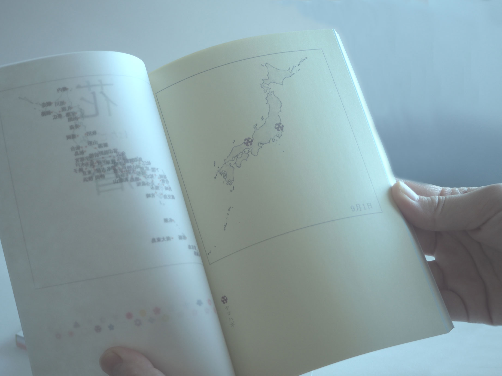

開花前線の時間
データについて
気象庁の季節観測の開花日（リンク）の平年値をもとに、作成しています。
２７種類の植物の開花日を比較しています。
12/1から11/30まで時間で進めて表現しています。
また、動物季節観測の情報から、鳥の声や虫の声も追加してあります。
アイコン
各植物のアイコンを作成しました。
各地点に花のアイコンを表示させることで開花を表しました。
本の製作
同じ題材で本も作成しました。 一日一枚３６５ページあります。 先頭に表紙→地点の説明を挟んでいます。

- 
ページ内容
日本地図上の地点に花のアイコンをおいています。
下にアイコンとその花の名前をのせています。
ページ内容
３ヶ月で一冊、合計4冊です。 側面のグラデーションは季節のイメージに合わせて変化します。合計８色の色上質紙を使っています。うすむらさき、白、さくら、桃、サーモン、もえぎ、みず、レモン。